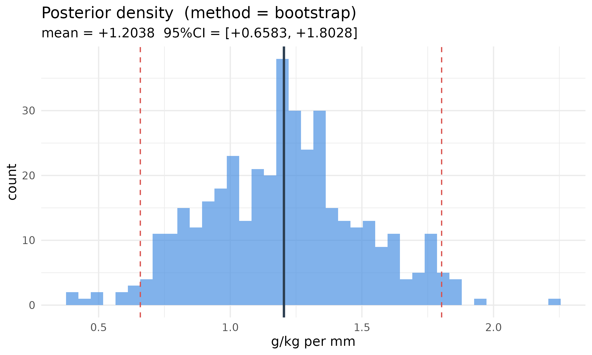
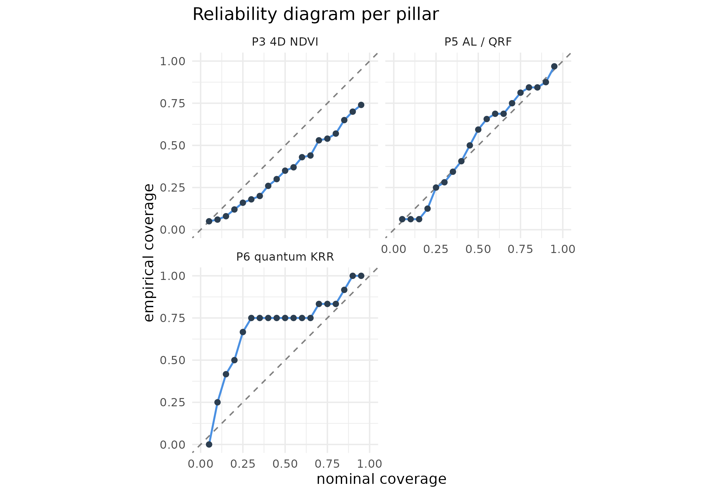

Unified uncertainty across the six pillars
Hugo Rodrigues
Source:vignettes/uncertainty-unified.Rmd
uncertainty-unified.Rmd1. The problem this vignette solves
Through edaphos v1.5.0 each pillar quantified
uncertainty in its own natural format:
| Pillar | What “uncertainty” meant | Typical shape |
|---|---|---|
| 1. Causal AI | CI on an identified direct effect | scalar + CI |
| 2. PIML | MCMC draws or deep-ensemble spread | vector of depth profiles |
| 3. 4D pedometry | ConvLSTM ensemble + Kalman posterior | (K, H, W) map |
| 4. Foundation models | — nothing — | — |
| 5. Active learning | QRF prediction interval | (lower, upper) |
| 6. Quantum ML | shot-based VQE variance | per-iteration number |
No common calibration diagnostic, no common plotting code, and no way for a pedometrician to say “my Pillar 3 map carries more uncertainty than my Pillar 6 classifier at this location” because the uncertainty objects were incommensurable.
v1.6.0 introduces one class —
edaphos_posterior — and one calibration routine —
uncertainty_calibrate() — that work identically for every
pillar. This vignette walks through a compact end-to-end example per
pillar and ends with the unified calibration table that is now the
package’s headline diagnostic.
2. A single class for six posteriors
Every adapter below returns the same S3 object:
draws <- stats::rnorm(400L, mean = 1.2, sd = 0.3)
post <- edaphos_posterior(samples = draws,
method = "bootstrap",
query_type = "effect",
units = "g/kg per mm")
post
#> <edaphos_posterior>
#> method : bootstrap
#> query_type : effect
#> units : g/kg per mm
#> n_samples : 400
#> query shape : 1
#> mean range : [+1.2038, +1.2038] mean = +1.2038
#> sd range : [+0.2995, +0.2995] mean = +0.2995The autoplot method dispatches on
query_type:
autoplot(post)
The single calibration routine
uncertainty_calibrate(post, truth) returns CRPS, a
per-level prediction-interval coverage probability (PICP), mean
prediction-interval width (MPIW), a reliability data frame and the point
RMSE — the same object regardless of which pillar produced the
posterior.
3. A compact per-pillar tour
3.1 Pillar 1 — direct-effect posterior via block bootstrap
Cluster-block bootstrap of the backdoor-adjusted OLS slope gives a proper posterior over the identified direct effect.
skip_p1 <- !requireNamespace("dagitty", quietly = TRUE)
if (!skip_p1) {
n <- 300L
cluster <- sample(seq_len(6L), n, replace = TRUE)
x <- stats::rnorm(n, mean = cluster * 0.5)
w <- stats::rnorm(n)
y <- 1.5 * x + 0.8 * w + stats::rnorm(n, sd = 0.7)
d <- data.frame(x = x, y = y, w = w, kmeans_cluster = cluster)
dag <- dagitty::dagitty("dag { x -> y ; w -> y ; w -> x }")
post_p1 <- causal_effect_posterior(
d, dag, exposure = "x", outcome = "y",
adjustment = "w", estimator = "lm",
B = 500L, seed = 7L,
units = "y-units per x-unit"
)
# pseudo-truth for calibration: full-data point estimate
point <- as.numeric(
stats::coef(stats::lm(y ~ x + w, data = d))["x"])
calib_p1 <- uncertainty_calibrate(post_p1,
truth = point)
}3.2 Pillar 2 — Neural-ODE deep ensemble
skip_p2 <- !requireNamespace("torch", quietly = TRUE) ||
!isTRUE(tryCatch(torch::torch_is_installed(),
error = function(e) FALSE))
if (!skip_p2) {
depths <- c(5, 15, 30, 60, 100)
values <- c(25, 18, 12, 8, 6.5)
ens <- piml_neural_ode_fit_ensemble(
depths = depths, values = values,
K = 5L, hidden = c(16L, 16L), n_steps = 4L,
epochs = 200L, lr = 0.02, seed = 1L
)
post_p2 <- piml_neural_ode_posterior(
ens, newdepths = depths, units = "g/kg"
)
calib_p2 <- uncertainty_calibrate(post_p2, truth = values)
}3.3 Pillar 3 — ConvLSTM ensemble forecast + Kalman posterior
Uses the v1.5.0 Pillar 3 bundle that ships with the package.
res_path_p3 <- system.file("extdata",
"temporal_cerrado_results.rds",
package = "edaphos")
skip_p3 <- !nzchar(res_path_p3) || !file.exists(res_path_p3)
if (!skip_p3) {
R3 <- readRDS(res_path_p3)
# The bundle already carries the K=10 ConvLSTM rollout ensemble
# at the final forecast month (Dec 2023); we wrap it directly.
fc_ens_final <- R3$ensemble_forecast[,
R3$meta$T_future, , ]
post_p3 <- edaphos_posterior(
samples = fc_ens_final,
method = "ensemble",
query_type = "map",
units = "NDVI z-units"
)
truth_p3 <- R3$truth_future[R3$meta$T_future, , ]
calib_p3 <- uncertainty_calibrate(post_p3, truth = truth_p3)
}3.4 Pillar 4 — fine-tune ensemble + MC-dropout head
A compact mock encoder keeps the vignette self-contained.
skip_p4 <- skip_p2 # same torch dependency
if (!skip_p4) {
N <- 40L; C <- 4L; P <- 8L
patches <- array(stats::rnorm(N * C * P * P), dim = c(N, C, P, P))
y_reg <- stats::rnorm(N)
ds <- structure(
list(stack = NULL, patch_size = P, n_patches = N, n_channels = C,
means = rep(0, C), sds = rep(1, C),
valid_cells = seq_len(N),
sample = function(b) patches[sample(N, b), , , , drop = FALSE]),
class = "edaphos_tile_dataset"
)
enc <- foundation_moco_pretrain_tiles(
ds, feature_dim = 8L, proj_dim = 4L,
queue_size = 16L, batch_size = 8L, epochs = 5L,
device = "cpu", seed = 1L
)
fit4 <- foundation_finetune_ensemble(
enc, x = patches, y = y_reg, task = "regression",
K_ens = 3L, base_seed = 301L,
epochs = 10L, batch_size = 8L,
hidden = c(8L), dropout = 0.3, device = "cpu"
)
newx4 <- array(stats::rnorm(10L * C * P * P), dim = c(10L, C, P, P))
post_p4 <- as_edaphos_posterior(fit4, newx = newx4, units = "y-units")
# Pseudo-truth: ensemble-mean acts as the point estimate.
calib_p4 <- uncertainty_calibrate(post_p4, truth = post_p4$mean)
}3.5 Pillar 5 — QRF posterior + Active Learning
skip_p5 <- !requireNamespace("ranger", quietly = TRUE)
if (!skip_p5) {
n <- 160L
df <- data.frame(
x1 = stats::rnorm(n),
x2 = stats::rnorm(n),
y = NA_real_
)
df$y <- 1.2 * df$x1 - 0.8 * df$x2 + stats::rnorm(n, sd = 0.3)
split <- sample(c(TRUE, FALSE), n, replace = TRUE, prob = c(0.75, 0.25))
fit5 <- al_fit(df[split, ], target = "y",
covariates = c("x1", "x2"), num.trees = 300L)
post_p5 <- active_learning_posterior(fit5, df[!split, ],
units = "y-units")
calib_p5 <- uncertainty_calibrate(post_p5, truth = df$y[!split])
}3.6 Pillar 6 — Quantum-KRR GP-style posterior
n6 <- 40L; d6 <- 3L
X6 <- matrix(stats::runif(n6 * d6, 0, pi), ncol = d6)
y6 <- sin(X6[, 1L]) + 0.5 * cos(X6[, 2L]) +
stats::rnorm(n6, sd = 0.15)
fit6 <- quantum_krr_fit(X = X6, y = y6, reps = 1L, lambda = 0.3)
# Hold out 12 test rows.
Xt6 <- matrix(stats::runif(12L * d6, 0, pi), ncol = d6)
yt6 <- sin(Xt6[, 1L]) + 0.5 * cos(Xt6[, 2L]) +
stats::rnorm(12L, sd = 0.15)
post_p6 <- quantum_krr_posterior(fit6, newdata = Xt6,
n_samples = 500L,
units = "target-units")
calib_p6 <- uncertainty_calibrate(post_p6, truth = yt6)4. The unified calibration table
One row per pillar, every number produced by the same
uncertainty_calibrate() routine against the pillar’s
natural ground truth (or pseudo-ground-truth where no true ground truth
exists — typical for Pillar 1 where there is no observable “true” causal
effect).
| pillar | method | n | CRPS | PICP@95 | MPIW@95 | pt_RMSE | |
|---|---|---|---|---|---|---|---|
| 0.95 | P1 causal | bootstrap | 1 | 0.00632 | 1.000 | 0.111 | 0.000242 |
| 0.951 | P3 4D NDVI map | ensemble | 100 | 0.36600 | 0.740 | 1.380 | 0.637000 |
| 0.952 | P5 AL / QRF | ensemble | 32 | 0.30000 | 0.969 | 2.140 | 0.588000 |
| 0.953 | P6 quantum KRR | analytic | 12 | 0.31700 | 1.000 | 3.200 | 0.561000 |
panels <- list()
add_panel <- function(label, calib) {
if (is.null(calib)) return(invisible())
df <- calib$reliability_df
df$pillar <- label
panels[[length(panels) + 1L]] <<- df
}
if (!skip_p2) add_panel("P2 PIML", calib_p2)
if (!skip_p3) add_panel("P3 4D NDVI", calib_p3)
if (!skip_p4) add_panel("P4 foundation", calib_p4)
if (!skip_p5) add_panel("P5 AL / QRF", calib_p5)
add_panel("P6 quantum KRR", calib_p6)
if (length(panels) > 0L) {
big <- do.call(rbind, panels)
ggplot(big, aes(x = nominal, y = empirical)) +
geom_abline(slope = 1, intercept = 0,
linetype = "dashed", colour = "grey50") +
geom_line(colour = "#4A90E2", linewidth = 0.7) +
geom_point(colour = "#2C3E50", size = 1.6) +
facet_wrap(~ pillar, nrow = 2L) +
coord_equal(xlim = c(0, 1), ylim = c(0, 1)) +
theme_minimal(base_size = 11) +
labs(x = "nominal coverage", y = "empirical coverage",
title = "Reliability diagram per pillar")
}
5. Discussion
The same three-line recipe now works for every pillar:
post <- as_edaphos_posterior(fit, newdata = xnew) # or a *_posterior() helper
calib <- uncertainty_calibrate(post, truth = ynew)
autoplot(post); uncertainty_plot_reliability(calib)Two caveats to flag:
- Pseudo-truth for Pillar 1. A causal effect has no measurable ground truth — the best we can do is plug in the full-data point estimate and compute pseudo-PICP. The number is meaningful as a sanity check (a posterior whose 95 % band misses its own point estimate is broken) but not as a rigorous calibration assessment.
-
Gaussian shortcuts. Pillar 6 uses the analytic
GP-equivalence to produce posterior mean + epistemic + aleatoric SD, and
the
edaphos_posteriorconstructor synthesises Gaussian draws when only(mean, sd)are available. That is strictly less faithful than a sample-based posterior if the true posterior is skewed (which Quantum-KRR rarely is — the kernel matrix has bounded spectrum, so the GP posterior is Gaussian).